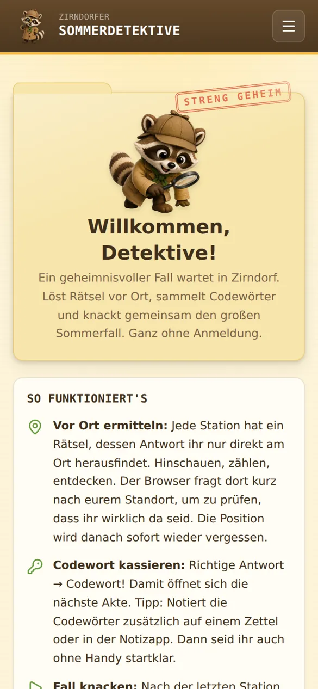
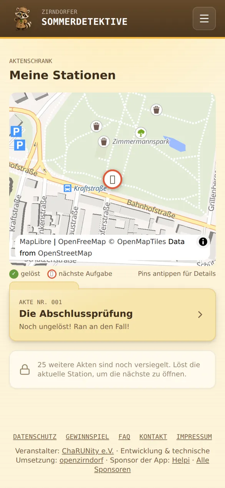
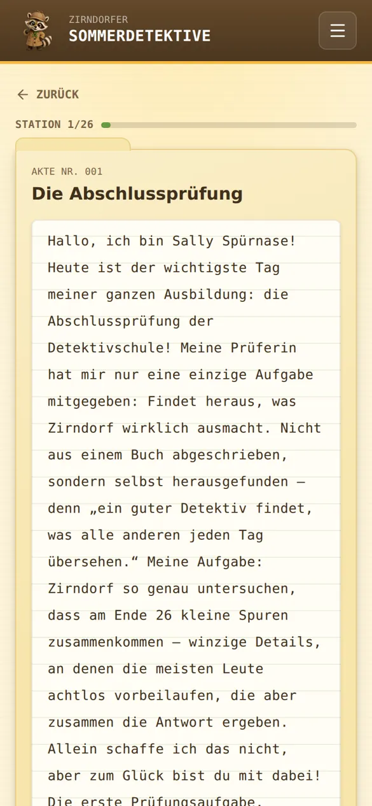
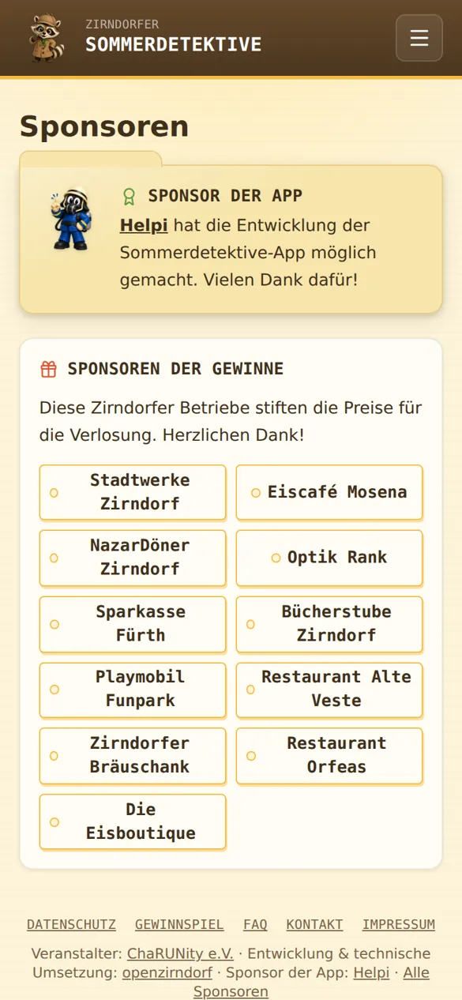
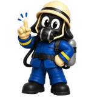

Zirndorfer Sommerdetektive
Die Rätsel-Stadtrallye lief in den Sommerferien vom 3. August bis Mitte September 2026 – der Fall ist geknackt, neue Rätsel lassen sich nicht mehr lösen. Danke an alle Spürnasen fürs Mitermitteln!

Start
Stationskarte
Rätsel-Akte
Sponsoren
Worum ging's?
Ferienspaß für Groß und Klein: Quer durch Zirndorf warteten 26 Stationen, jede mit einem Rätsel, dessen Antwort nur vor Ort zu finden war – eine Jahreszahl am Brunnen, eine Inschrift am Giebel, ein Schild an der Ecke. Wer richtig lag, bekam ein Codewort und die nächste Station wurde frei. Am Ende wartete ein persönliches Lösungswort, eine Detektiv-Urkunde und die Chance auf einen Preis.
Ganz ohne Login, ohne E-Mail, ohne Tracking: Der Spielstand lebte nur auf dem eigenen Handy, der Server kannte keine einzige Person.
Der Fall in Zahlen
- 136Teilnehmende Teams
- 114Fall komplett gelöst
- 84 %Abschlussquote
- 225Detektivnamen vergeben
- 26Stationen
- 12Sponsoren
Die Verlosung im Bräuschank
Zum Abschluss haben wir die Preise gemeinsam mit den Spürnasen und ihren Familien live verlost – aufgerufen wurde nur der Detektivname, nie eine Mailadresse. Der Zirndorfer Bräuschank hat uns dafür einen Platz zur Verfügung gestellt. Vielen Dank!
- Wann
- Donnerstag, 24. September 2026, 18 Uhr
- Wo
- Zirndorfer Bräuschank
- Preise
- gestiftet von 11 Zirndorfer Betrieben
- Im Lostopf
- alle gültigen Lösungswörter, jedes genau einmal
Wer gewonnen hat und nicht dabei sein konnte, wurde per E-Mail benachrichtigt und kann den Gewinn innerhalb von vier Wochen im Hotel Knorz in Zirndorf abholen – mit Detektivname und Lösungswort.
Danke an unsere Sponsoren

Sponsor der App: Helpi hat die Entwicklung der Sommerdetektive möglich gemacht – und die Spürnasen als Maskottchen mit Einsatz-Tipps begleitet.
Diese Zirndorfer Betriebe haben die Preise für die Verlosung gestiftet:
- Stadtwerke Zirndorf
- Eiscafé Mosena
- NazarDöner Zirndorf
- Optik Rank
- Sparkasse Fürth
- Bücherstube Zirndorf
- Playmobil Funpark
- Restaurant Alte Veste
- Zirndorfer Bräuschank
- Restaurant Orfeas
- Die Eisboutique
Veranstalter: ChaRUNity e.V. · Entwicklung & technische Umsetzung: OpenZirndorf
Und jetzt?
Die Rätsel, die Standortprüfung und das Gewinnspiel sind abgeschaltet – diese Seite ist nur noch ein Rückblick. Wer Lust auf mehr hat: OpenZirndorf baut weiter an digitalen Projekten für Zirndorf, zuletzt auch an der Fahrrad-Aktion Erfahre Zirndorf.